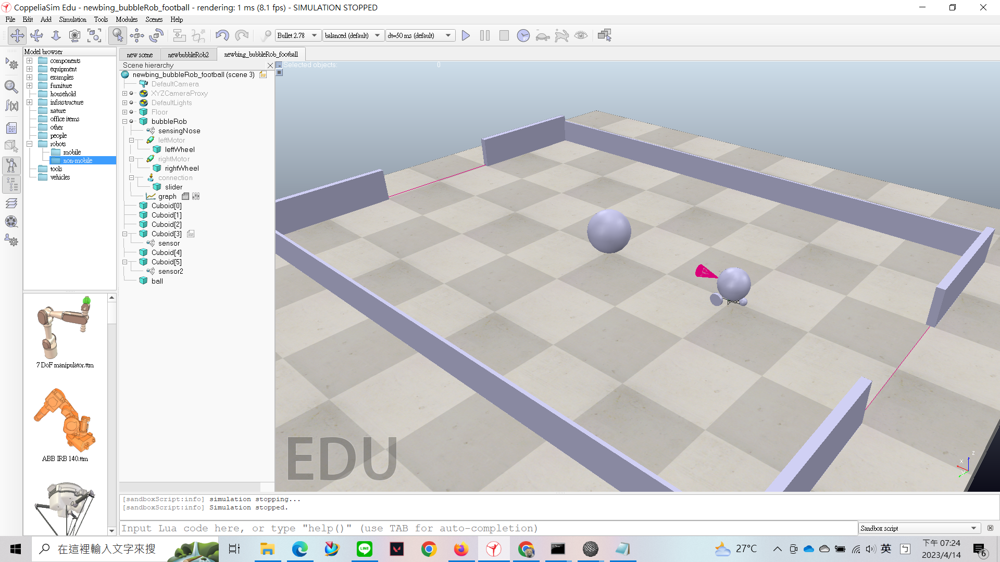
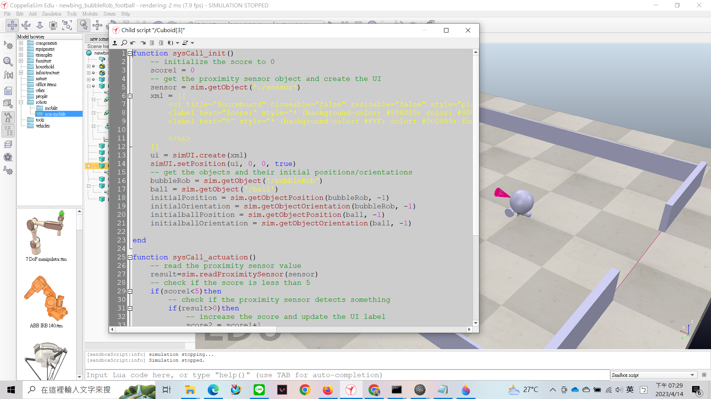
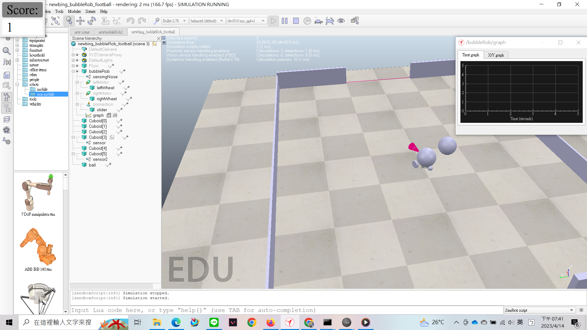
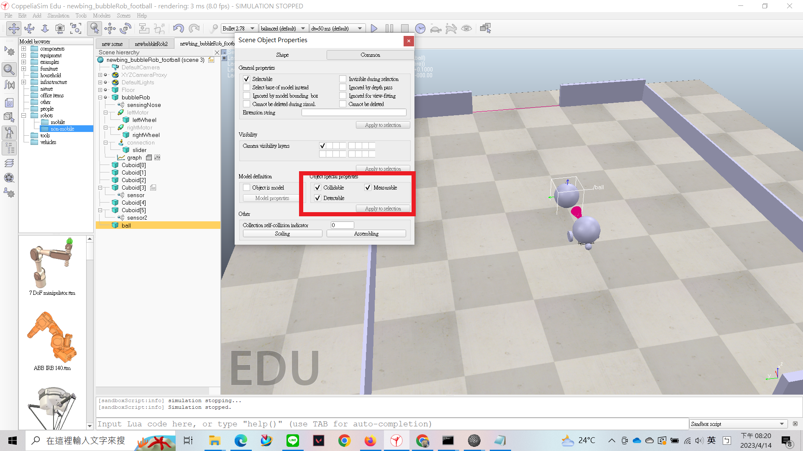
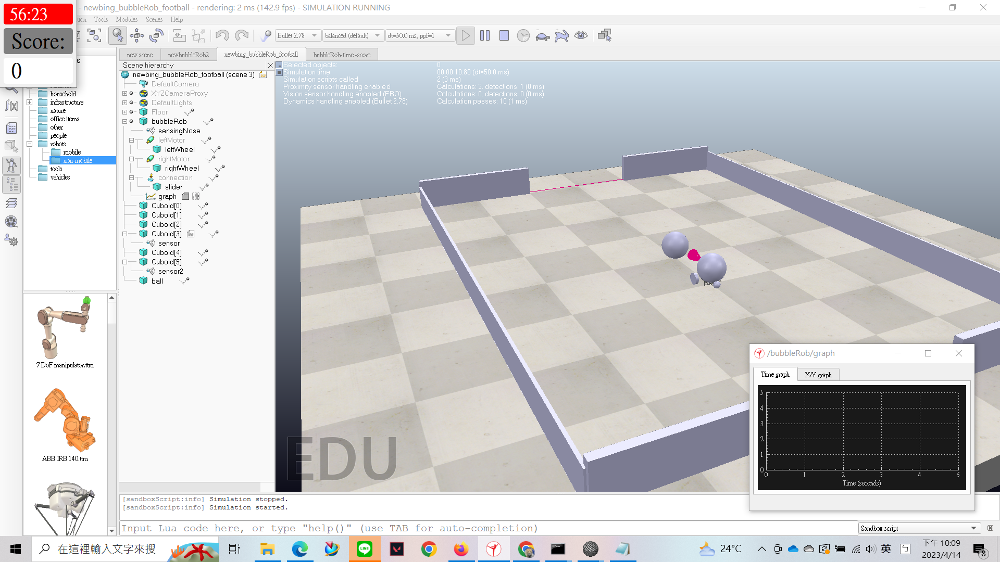
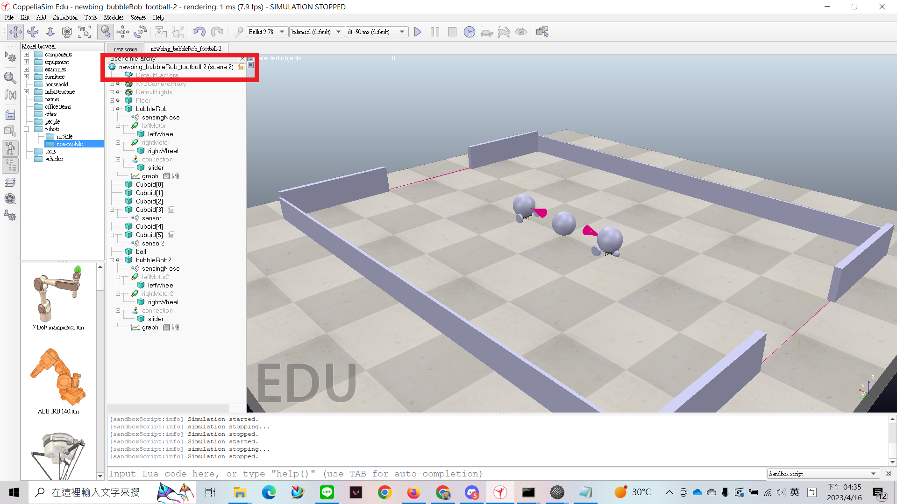

pj1 <<
Previous Next >> team12
team10
editor:41023119 呂承劼 41023138 林敬燐
3/30 已完成場地及感測器

4/14 完成記分板程式

4/14 可進行計分
觸碰到感測器球及機器人會重置到原本的位置
在錄影時記分板不會顯示出來-附上圖片

當分數為5分時，會暫停模擬
在製作感測器時求記得把 collidable、measurable、detectable 這三個選項打開

另外要注意的是感測器 z軸的部分不能為0，否則感測器會直接偵測到地板導致程式暫停模擬
記分板程式註解
function sysCall_init()
score1 = 0 -- 初始化一個名為score1的變數，值為0
sensor = sim.getObject('./sensor') -- 從模擬場景中獲取一個名為sensor的物體
-- 創建一個UI，包括標題、計分標籤和當前分數值標籤，使用plastique風格
xml = [[
<ui title="Scoreboard" closeable="false" resizable="false" style="plastique">
<label text="Score:" style="* {background-color: #808080; color: #000000; font-size: 40px; font-weight: bold; padding: 5px; border-radius: 5px; }" id="10"/>
<label text="0" style="* {background-color: #FFF; color: #000000; font-size: 40px; font-weight: bold; padding: 5px; border-radius: 5px;}" id="30"/>
</ui>
]]
ui = simUI.create(xml) -- 創建UI
simUI.setPosition(ui, 0,0, true) -- 將UI定位在屏幕左上角
bubbleRob = sim.getObject('/bubbleRob') -- 從模擬場景中獲取名為bubbleRob的物體句柄
ball = sim.getObject('/ball') -- 從模擬場景中獲取名為ball的物體句柄
bubbleRob2 = sim.getObject('/bubbleRob2') -- 從模擬場景中獲取名為bubbleRob2的物體句柄
initialPosition = sim.getObjectPosition(bubbleRob, -1) -- 獲取bubbleRob物體的初始位置
initialOrientation = sim.getObjectOrientation(bubbleRob, -1) -- 獲取bubbleRob物體的初始方向
initialPosition2 = sim.getObjectPosition(bubbleRob2, -1) -- 獲取bubbleRob2物體的初始位置
initialOrientation2 = sim.getObjectOrientation(bubbleRob2, -1) -- 獲取bubbleRob2物體的初始方向
initialballPosition = sim.getObjectPosition(ball, -1) -- 獲取ball物體的初始位置
initialballOrientation = sim.getObjectOrientation(ball, -1) -- 獲取ball物體的初始方向
end
function sysCall_actuation()
--simUI.setLabelText(ui, 30, tostring(sim.getFloatSignal("myVariable")))
-- 讀取接近傳感器的距離值，將其存儲在result變數中
result=sim.readProximitySensor(sensor)
-- 如果分數小於5，則執行以下操作
if(score1<5)then
-- 如果檢測到接近物體，則執行以下操作
if(result>0)then
-- 將score1變數增加1
score2 = score1+1
-- 在UI中更新分數值標籤的文本為score2
simUI.setLabelText(ui, 30, tostring(score2))
-- 重置bubbleRob、bubbleRob2和ball物體的位置和方向
sim.setObjectPosition(bubbleRob, -1, initialPosition)
sim.setObjectOrientation(bubbleRob, -1, initialOrientation)
sim.setObjectPosition(bubbleRob2, -1, initialPosition2)
sim.setObjectOrientation(bubbleRob2, -1, initialOrientation2)
sim.setObjectPosition(ball, -1, initialballPosition)
sim.setObjectOrientation(ball, -1, initialballOrientation)
-- 將score1設置為score2
score1=score2
end
else
-- 如果分數達到5，則暫停模擬
sim.pauseSimulation()
end
end
倒數計時器程式註解
-- 初始化函數，初始化得分(score1)為0和計時器(count)為3600
function sysCall_init()
-- initialize the score to 0
score1 = 0 -- 初始化得分
count = 3600 -- 初始化計時器
-- 獲取接近傳感器對象並創建UI界面
sensor = sim.getObject('./sensor')
xml = [[
<ui title="Scoreboard" closeable="false" resizable="false" style="plastique">
<label text="60:00.0" style="* {background-color: #F00; color: #FFF; font-size: 32px; font-weight: bold; padding: 4px; border-radius: 4px;}" id="10"/>
<label text="Score:" style="* {background-color: #808080; color: #000000; font-size: 40px; font-weight: bold; padding: 5px; border-radius: 5px; }" id="20"/>
<label text="0" style="* {background-color: #FFF; color: #000000; font-size: 40px; font-weight: bold; padding: 5px; border-radius: 5px;}" id="30"/>
</ui>
]]
ui = simUI.create(xml)
simUI.setPosition(ui, 0, 0, true)
-- 獲取對象及其初始位置/方向
bubbleRob = sim.getObject('/bubbleRob')
ball = sim.getObject('/ball')
initialPosition = sim.getObjectPosition(bubbleRob, -1)
initialOrientation = sim.getObjectOrientation(bubbleRob, -1)
initialballPosition = sim.getObjectPosition(ball, -1)
initialballOrientation = sim.getObjectOrientation(ball, -1)
end
function sysCall_actuation() -- 讀取接近傳感器值
result=sim.readProximitySensor(sensor)
-- 檢查得分是否小於5
if(score1<5)then
-- 檢查接近傳感器是否檢測到某物
if(result>0)then
-- 增加得分並更新UI標籤
score2 = score1+1
simUI.setLabelText(ui, 30, tostring(score2))
-- 重置對象的位置和方向
sim.setObjectPosition(bubbleRob, -1, initialPosition)
sim.setObjectOrientation(bubbleRob, -1, initialOrientation)
sim.setObjectPosition(ball, -1, initialballPosition)
sim.setObjectOrientation(ball, -1, initialballOrientation)
-- 更新得分變量
score1=score2
end
end
if count > 0 then -- 檢查計時器是否大於0
count = count - 1 -- 減少倒數時間
local minutes = math.floor(count / 60) -- 計算分鐘
local seconds = count % 60 -- 計算秒數
local timeStr = string.format("%d:%02d", minutes , seconds) -- 格式化時間字符串
simUI.setLabelText(ui, 10, timeStr) -- 更新時間UI標籤
simUI.setLabelText(ui, 30, tostring(score1)) -- 更新score的UI標籤
else
-- 如果時間到會暫停模擬
sim.pauseSimulation()
end
end
可以將倒數計時器顯示出來，但計時器所減少的時間會比正常時間快好幾倍

bubbleRob_football 檔案 : bubbleRob_football_pj1ag10
加入連線對戰 bubbleRob_football 檔案 : bubbleRob_football-2_pj1ag10
連線remoteAPI程式註解
# 引入必要的模块
from zmqRemoteApi import RemoteAPIClient
import keyboard
import sim
import time
import simConst
# 打印程式啟動的訊息
print('Program started')
# 關閉所有已開啟的連線
sim.simxFinish(-1)
# 連接到遠端 API 伺服器
clientID = sim.simxStart('192.168.56.1', 19998, True, True, 5000, 5)
# 啟動仿真
sim.simxStartSimulation(clientID, sim.simx_opmode_oneshot_wait)
# 判斷是否成功連線到伺服器
if clientID != -1:
print('Connected to remote API server')
else:
print('Failed connecting to remote API server')
# 打印仿真開始的訊息
print('Simulation started')
# 取得左右輪子的控制句柄
errorCode, leftMotor = sim.simxGetObjectHandle(clientID, 'leftMotor2', sim.simx_opmode_oneshot_wait)
errorCode, rightMotor = sim.simxGetObjectHandle(clientID, 'rightMotor2', sim.simx_opmode_oneshot_wait)
# 設定 BubbleRob 的速度
def setBubbleRobVelocity(leftWheelVelocity, rightWheelVelocity):
# 取得左右輪子的控制句柄
errorCode, leftMotor = sim.simxGetObjectHandle(clientID, '/leftMotor2', sim.simx_opmode_oneshot_wait)
errorCode, rightMotor = sim.simxGetObjectHandle(clientID, '/rightMotor2',sim.simx_opmode_oneshot_wait)
# 設定左右輪子的目標速度
sim.simxSetJointTargetVelocity(clientID, leftMotor, leftWheelVelocity, simConst.simx_opmode_streaming)
sim.simxSetJointTargetVelocity(clientID, rightMotor, rightWheelVelocity, simConst.simx_opmode_streaming)
# 循環檢測鍵盤事件
while True:
if keyboard.is_pressed('up'):
# 按下"上"鍵，前進
setBubbleRobVelocity(2.0, 2.0)
elif keyboard.is_pressed('down'):
# 按下"下"鍵，後退
setBubbleRobVelocity(-2.0, -2.0)
elif keyboard.is_pressed('left'):
# 按下"左"鍵，左轉
setBubbleRobVelocity(-2.0, 2.0)
elif keyboard.is_pressed('right'):
# 按下"右"鍵，右轉
setBubbleRobVelocity(2.0, -2.0)
elif keyboard.is_pressed('q'):
# 按下"q"鍵，停止仿真
sim.stopSimulation()
else:
# 沒有按下任何鍵，停止移動
setBubbleRobVelocity(0.0, 0.0)
此程式必須放在圖片紅色框框檔案中

啟動遠端API程式註解
-- The main script is not supposed to be modified, except in special cases.
require('defaultMainScript')
function sysCall_init()
simRemoteApi.start(19998) -- 啟動遠程 API，監聽端口號為 19998
end
連線 API sensor 程式註解
--在這個函數中初始化變數，設置UI元素，並獲取物體的初始位置和方向
function sysCall_init()
score1 = 0 --初始化分數變量
count = 24000 --初始化計時器變量，代表比賽時間，這裡設置為24000，即400秒
sensor = sim.getObject('./sensor') --獲取名為"sensor"的接近傳感器
--創建UI元素，顯示分數和計時器
xml2 = [[
<ui title="計分板" closeable="false" resizable="false" style="plastique">
<label text="分數：" style="* {background-color: #808080; color: #000000; font-size: 40px; font-weight: bold; padding: 5px; border-radius: 5px; }" id="20"/>
<label text="0" style="* {background-color: #FFF; color: #000000; font-size: 40px; font-weight: bold; padding: 5px; border-radius: 5px;}" id="30"/>
</ui>
]]
ui = simUI.create(xml2) --創建計分板UI
simUI.setPosition(ui, 0,0, true) --設置UI位置
xml3 = [[
<ui title="計時器" closeable="false" resizable="false" style="plastique">
<label text="400:00.0" style="* {background-color: #F00; color: #FFF; font-size: 32px; font-weight: bold; padding: 4px; border-radius: 4px;}" id="10"/>
</ui>
]]
ui2 = simUI.create(xml3) --創建計時器UI
simUI.setPosition(ui2, 900,0, true) --設置UI位置
--獲取機器人和球的句柄，以及它們的初始位置和方向
bubbleRob = sim.getObject('/bubbleRob')
ball = sim.getObject('/ball')
bubbleRob2 = sim.getObject('/bubbleRob2')
initialPosition = sim.getObjectPosition(bubbleRob, -1)
initialOrientation = sim.getObjectOrientation(bubbleRob, -1)
initialPosition2 = sim.getObjectPosition(bubbleRob2, -1)
initialOrientation2 = sim.getObjectOrientation(bubbleRob2, -1)
initialballPosition = sim.getObjectPosition(ball, -1)
initialballOrientation = sim.getObjectOrientation(ball, -1)
end
--在這個函數中實現比賽計時和計分邏輯
function sysCall_actuation() -- 讀取接近傳感器值
result=sim.readProximitySensor(sensor)
-- 檢查得分是否小於5
if(score1<5)then
-- 檢查接近傳感器是否檢測到某物
if(result>0)then
-- 增加得分並更新UI標籤
score2 = score1+1
simUI.setLabelText(ui, 30, tostring(score2))
-- 重置對象的位置和方向
sim.setObjectPosition(bubbleRob, -1, initialPosition)
sim.setObjectOrientation(bubbleRob, -1, initialOrientation)
sim.setObjectPosition(bubbleRob2, -1, initialPosition2)
sim.setObjectOrientation(bubbleRob2, -1, initialOrientation2)
sim.setObjectPosition(ball, -1, initialballPosition)
sim.setObjectOrientation(ball, -1, initialballOrientation)
-- 更新得分變量
score1=score2
end
end
if count > 0 then -- 檢查計時器是否大於0
count = count - 1 -- 減少倒數時間
local minutes = math.floor(count / 60) -- 計算分鐘
local seconds = count % 60 -- 計算秒數
local timeStr = string.format("%d:%02d", minutes , seconds) -- 格式化時間字符串
simUI.setLabelText(ui, 10, timeStr) -- 更新時間UI標籤
simUI.setLabelText(ui, 30, tostring(score1)) -- 更新score的UI標籤
else
-- 如果時間到會暫停模擬
sim.pauseSimulation()
end
end
連線 API sensor2 程式註解
function sysCall_init()
score1 = 0 -- 初始分數為 0
sensor = sim.getObject('./sensor2') -- 取得感測器物件
xml = [[
<ui title="Scoreboard" closeable="false" resizable="false" style="plastique">
<label text="Score:" style="* {background-color: #808080; color: #000000; font-size: 40px; font-weight: bold; padding: 5px; border-radius: 5px; }" id="40"/>
<label text="0" style="* {background-color: #FFF; color: #000000; font-size: 40px; font-weight: bold; padding: 5px; border-radius: 5px;}" id="50"/>
</ui>
]] -- 創建 UI 界面
ui = simUI.create(xml) -- 顯示 UI 界面
simUI.setPosition(ui, 1770,0, true) -- 設定 UI 界面的位置
bubbleRob = sim.getObject('/bubbleRob') -- 取得 BubbleRob 物件
ball = sim.getObject('/ball') -- 取得球物件
bubbleRob2 = sim.getObject('/bubbleRob2') -- 取得第二個 BubbleRob 物件
initialPosition = sim.getObjectPosition(bubbleRob, -1) -- 取得 BubbleRob 初始位置
initialOrientation = sim.getObjectOrientation(bubbleRob, -1) -- 取得 BubbleRob 初始方向
initialPosition2 = sim.getObjectPosition(bubbleRob2, -1) -- 取得第二個 BubbleRob 初始位置
initialOrientation2 = sim.getObjectOrientation(bubbleRob2, -1) -- 取得第二個 BubbleRob 初始方向
initialballPosition = sim.getObjectPosition(ball, -1) -- 取得球的初始位置
initialballOrientation = sim.getObjectOrientation(ball, -1) -- 取得球的初始方向
end
function sysCall_actuation()
--simUI.setLabelText(ui, 30, tostring(sim.getFloatSignal("myVariable")))
result=sim.readProximitySensor(sensor) -- 讀取感測器的值
if(score1<5)then -- 如果分數小於 5 分
if(result>0)then -- 如果感測器的值大於 0
score2 = score1+1 -- 分數加 1
simUI.setLabelText(ui, 50, tostring(score2)) -- 更新分數顯示
sim.setObjectPosition(bubbleRob, -1, initialPosition) -- 將 BubbleRob 重置到初始位置
sim.setObjectOrientation(bubbleRob, -1, initialOrientation) -- 將 BubbleRob 重置到初始方向
sim.setObjectPosition(bubbleRob2, -1, initialPosition2) -- 將第二個 BubbleRob 重置到初始位置
sim.setObjectOrientation(bubbleRob2, -1, initialOrientation2) -- 將第二個 BubbleRob 重置到初始方向
sim.setObjectPosition(ball, -1, initialballPosition) -- 將 Ball 重置到初始位置
sim.setObjectOrientation(ball, -1, initialballOrientation) -- 將 Ball 重置到初始方向
-- 將score1設置為score2
score1=score2
end
else
-- 如果分數達到5，則暫停模擬
sim.pauseSimulation()
end
end
所有檔案壓縮檔：bubbleRob football 2a-pj1ag10.7z
pj1 <<
Previous Next >> team12